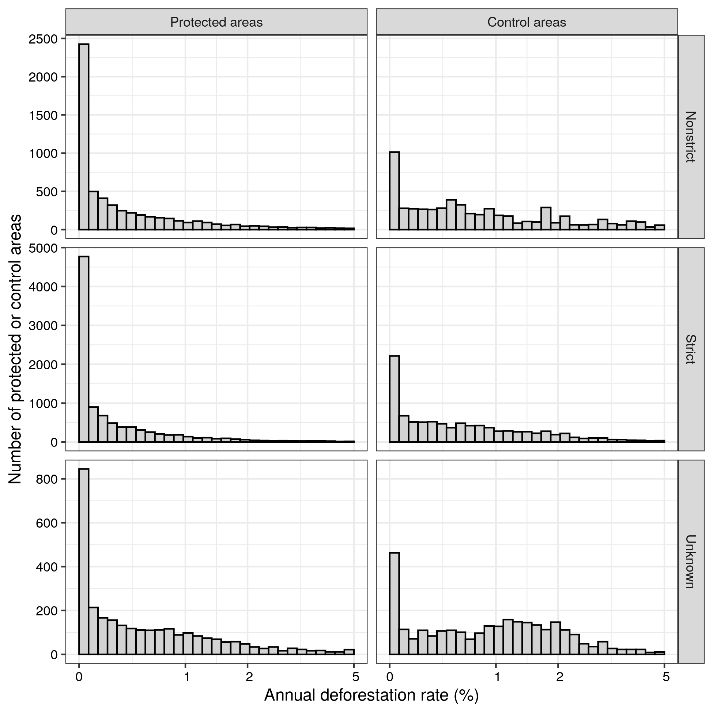
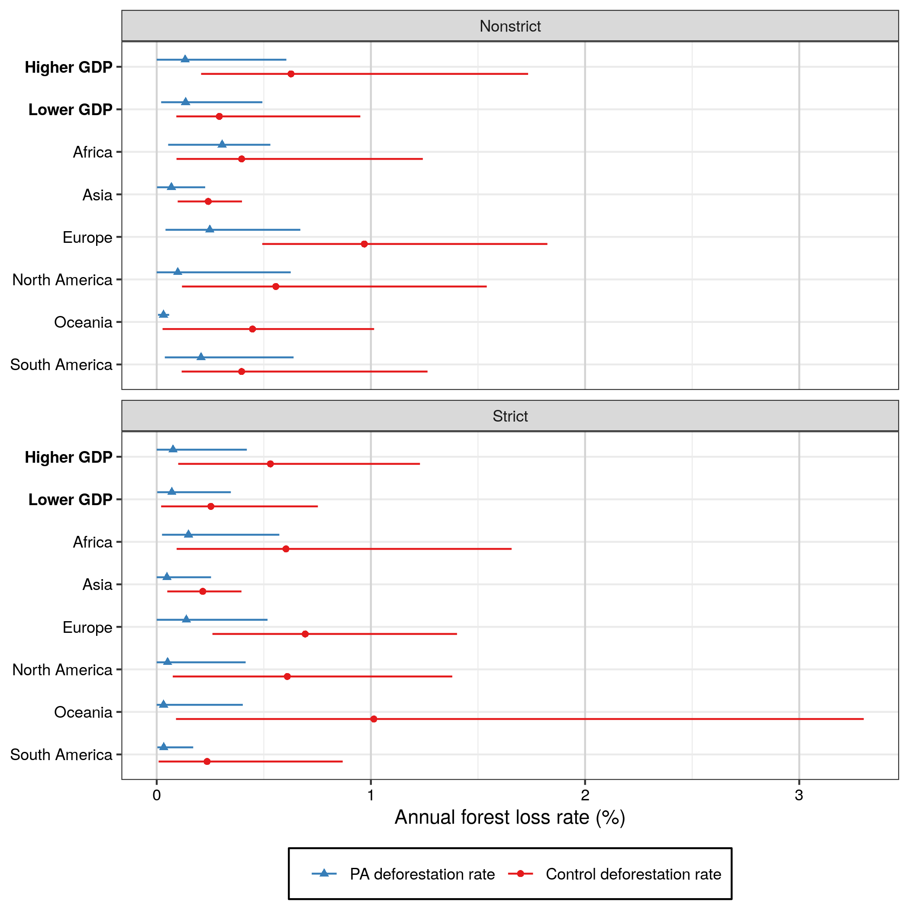

Some code modifications are required for the code to run. These edits are not intended to test the robustness of the analysis, just for the successful run of the scripts.
We will use the following function that explicitly declares which modification are made in the source code.
Code
library(tidyverse)if (!stringr::str_detect(getwd(), "PA_matching")) {setwd("PA_matching")}if (!stringr::str_ends(getwd(), "replication_report")) {setwd("replication_report")}# A function to replace some parts of the codereplace_all <-function(pattern, replacement, file) {readLines(file) %>%str_replace_all(pattern, replacement) %>%writeLines(file)}
# The code below saves the output data to a private data lake.gee_pattern <-"(land|elev|loss|gain|cover|mask|travel_time|pop_dens).*tif"# List the outputs of the GEE data fetchinggee_local <-list.files(path ="data_input", full.names =TRUE,pattern =paste0("^", gee_pattern))# Transform to specify their location on S3gee_to_s3 <-paste0("Replication_wolf/", gee_local)# Send to S3map2(gee_local, gee_to_s3 , put_to_s3)
Code
# fetch from S3 the data gathered from Google Earth Engine# The code below fetches the output data from a private data lake.# naming pattern of files fetched from Google Earth Enginegee_pattern <-"(land|elev|loss|gain|cover|mask|travel_time|pop_dens).*tif"# Filter those files from bucket contentgee_in_s3 <- my_files %>%filter(str_detect(Key, paste0("Replication_wolf/data_input.", gee_pattern))) %>%pluck("Key")# rename for local locationgee_to_local <-str_remove(gee_in_s3, "Replication_wolf/")# Copy locallymap2(gee_in_s3, gee_to_local, save_from_s3)
5.1.2 Fetch species data from IUCN
Modify the script to enable it to run on another machine.
The column names in the official BOTW database are now in lowercase. It was apparently in uppercase when Wolf et al. processed the data. We need to modify the reference to one column name in the script for it to run.
# Save the output data to S3# Species data csv ------------------------------------------------------------put_to_s3(from ="data_processed/species_data.csv", to ="Replication_wolf/data_processed/species_data.csv")# Bird shapefiles -------------------------------------------------------------# List the bird shapefiles created by 002 - dl_IUCN.Rbird_shps <-list.files(path ="data_input/range_maps",pattern ="BIRDS_.*", full.names =TRUE)# Bundle them in an encrypted zip locallysystem(paste0("zip -P ", my_key_zip, " birds_shps.zip ",paste(bird_shps, collapse =" ")))# Send the local zip to S3put_to_s3(from ="birds_shps.zip", to ="Replication_wolf/data_input/range_maps/birds_shps.zip")# Delete the local zipfile.remove("birds_shps.zip")# elev.tif --------------------------------------------------------------------# The main output of the script.put_to_s3(from ="data_processed/rasters/elev.tif", to ="Replication_wolf/data_processed/rasters/elev.tif")
Code
# Load the data save_from_s3(from ="Replication_wolf/data_processed/species_data.csv",to ="data_processed/species_data.csv")# Fetch birds from S3save_from_s3(from ="Replication_wolf/data_input/range_maps/birds_shps.zip",to ="birds_shps.zip")system(paste("unzip -P", my_key_zip, "birds_shps.zip"))file.remove("birds_shps.zip")# species_data <- read_csv("data_processed/species_data.csv")save_from_s3(from ="Replication_wolf/data_processed/rasters/elev.tif",to ="data_processed/rasters/elev.tif")
5.1.3 Compute species richness
We need to replace the specific path used by Wolf et al with a more generic path. 18 python packages and package modules are imported by the script but are not used in the analysis. We comment them to avoid dependency complications. The ray package is designed to work with some virtual memory that is not present on our configuration. We need to add a mention an option to enable ray to work with physical memory. We also need to modify the following command richness = results[0], as it correspond to a method to assign an array that is not allowed in recent numpy versions and returns an error. We therefore add .copy() to this command, to have richness = results[0].copy(), which now correspond to the correct way of proceeding with this operation in python.
# Save outputsput_to_s3(from ="data_processed/non-threatened.tif", to ="Replication_wolf/data_processed/non-threatened.tif")put_to_s3(from ="data_processed/threatened.tif", to ="Replication_wolf/data_processed/threatened.tif")
Code
# Fetch outputs# Save outputssave_from_s3(from ="Replication_wolf/data_processed/non-threatened.tif", to ="data_processed/non-threatened.tif")save_from_s3(from ="Replication_wolf/data_processed/threatened.tif", to ="data_processed/threatened.tif")
5.1.4 Join rasters
This steps corresponds to the file 004 - join_rasters.R, which original content can be examined below.
This script cannot be run without modification. The location of the working directory was specific to the author machine, we replace by a generic location. The script fetches data from Curtis et al [INSERT CITATION], but the URL has changed. We replace with the new URL and modify too the file name with is now all in lowercase. The URLs for Curtis et al. data and WWF data have changed There is a typo on line 136: an object called PA_dists is called but no object exists with this name, however an object PAs_dist (without a final “s”) was created on the previous code line
Code
join_script <-"PA_matching_asis/004 - join_rasters.R"my_wd <-paste0(getwd(), "/")# Change the working directory locationreplace_all(pattern ="/home/chrisgraywolf/shared/analysis/PA_matching/", replacement = my_wd,file = join_script)replace_all(pattern ='read_sf\\("data_input/PAs/WDPA_Jan2020-shapefile-polygons.shp"\\)',replacement ='geoarrow::read_geoparquet_sf\\("data_input/PAs/WDPA_Jan2020_polygons.parquet"\\)',file = join_script)replace_all(pattern ='PAs_tab\\$geometry = NULL',replacement ='PAs_tab = st_drop_geometry\\(PAs_tab\\)',file = join_script)# Correct the typo in the codereplace_all(pattern ="PAs_buffer = PA_dists <= 10e3",replacement ="PAs_buffer = PAs_dist <= 10e3",file = join_script)
Gather data
Code
# Listing files in bucketmy_files <-get_bucket_df(bucket ="fbedecarrats",prefix ="Replication_wolf",region ="")# Select PA shpmy_PAs <- my_files %>%filter(str_detect(Key, "/PAs/WDPA")) %>%pluck("Key")# Create paths in local machinemy_PAs_dest <- my_PAs %>%str_remove("Replication_wolf/")# Retrieve the datamap2(my_PAs, my_PAs_dest, save_from_s3)# Select WWF shpmy_biomes <- my_files %>%filter(str_detect(Key, "/official/")) %>%pluck("Key")# Create paths in local machinemy_biomes_dest <- my_biomes %>%str_remove("Replication_wolf/")# Retrieve the datamap2(my_biomes, my_biomes_dest, save_from_s3)
# Save outputs# List present tifs# See which are not already in S3processed_local <-list.files(path ="data_processed",recursive =TRUE,full.names =TRUE) %>%str_subset(., "vrt$", negate =TRUE)# Listing files in bucketmy_files <-get_bucket_df(bucket ="fbedecarrats",prefix ="Replication_wolf",region ="")processed_s3 <- my_files %>%filter(str_detect(Key, "/data_processed/")) %>%mutate(path =str_remove(Key, "Replication_wolf/")) %>%pluck("path")to_put_s3 <- processed_local[!processed_local %in% processed_s3]to_put_s3path_in_s3 <-paste0("Replication_wolf/", to_put_s3)# Put them in S3map2(to_put_s3, path_in_s3, put_to_s3)
ERROR 4: : No such file or directory
Warning 1: Can't open . Skipping it
ERROR 4: data_input/lossyear.vrt: No such file or directory
Warning messages:
1: In system(cmd, intern = TRUE) :
running command '"/usr/bin/gdalbuildvrt" "data_input/lossyear.vrt" ""' had status 1
2: In system(cmd, intern = TRUE) :
running command '"/usr/bin/gdalwarp" -te -17367530.4451614 -7342769.86350132 17366469.5548386 7342230.13649868 -tr 1000 1000 -t_srs "+proj=cea +lon_0=0 +lat_ts=30 +x_0=0 +y_0=0 +datum=WGS84 +ellps=WGS84 +units=m +no_defs" -of "VRT" "data_input/lossyear.vrt" "data_input/lossyear_proj.vrt"' had status 2
5.1.5 Match pixels on covariates
Code
matching_script <-"PA_matching_asis/005 - covariate_matching.jl"# Modify the location of the working directorymy_wd <-getwd()# The way Julia has to write pathes on windows is really weirdif (str_detect(str_to_lower(Sys.getenv("OS")), "windows")) {# Needs bunch of escape characters in the working directory my_wd <-str_replace_all(my_wd, "\\/", "\\\\\\\\\\\\\\\\\\\\")# \U and \s mean something so these letters get chopped in the process my_wd <-str_replace_all(my_wd, "ers", "Users")# Need also to specify the location of the specific tifreplace_all(pattern ="data_processed\\/rasters\\/cover.tif", replacement ="data_processed\\\\\\\\rasters\\\\\\\\cover.tif",file = matching_script)} # Change the working directory locationreplace_all(pattern ="/home/chrisgraywolf/shared/analysis/PA_matching/", replacement = my_wd,file = matching_script)# Need to specify the output type (DataFrame) in CSV.read command replace_all(pattern ="CSV\\.read\\(\"data_processed/PAs_tab\\.csv\"\\)", replacement ="CSV\\.read\\(\"data_processed/PAs_tab\\.csv\", DataFrame\\)",file = matching_script)# No need to load this package: not used, and throws useless warningsreplace_all(pattern ="using RCall",replacement ="",file = matching_script)# Update syntax for joins: join(..., kind = inner) => innerjoin()replace_all(pattern ="out = join\\(data_treatment,",replacement ="out = leftjoin\\(data_treatment,",file = matching_script)replace_all(pattern ="on = \\:PAs,",replacement ="on = \\:PAs\\)",file = matching_script)replace_all(pattern ="kind = \\:left\\)",replacement ="",file = matching_script)# Need to add a dot before equal of in-place operationsreplace_all(pattern ="out\\[\\:,var\\] = mean\\(df_small\\[\\:,var\\]\\)",replacement ="out\\[\\:,var\\] .= mean\\(df_small\\[\\:,var\\]\\)",file = matching_script)# Update joining syntaxreplace_all(pattern ="join(data_treatment_coarsened[!,vcat\\(:PAs,:STATUS_YR,match\\)], data_control_coarsened, on = match, kind = :inner)",replacement ="innerjoin(data_treatment_coarsened[!, vcat\\(:PAs, :STATUS_YR, match\\)], data_control_coarsened, on = match\\)",file = matching_script)# On line 141, update inner join syntaxreplace_all(pattern ="join\\(data_treatment_coarsened",replacement ="innerjoin\\(data_treatment_coarsened",file = matching_script)replace_all(pattern =", kind = \\:inner\\)",replacement ="\\)",file = matching_script)# Update the by() syntax => combine(groupby())replace_all(pattern ='by\\(df, setdiff\\(names\\(df\\), \\["treatment"\\]\\)\\)',replacement ='combine\\(groupby\\(df, setdiff\\(names\\(df\\), \\["treatment"\\]\\)\\)\\)',file = matching_script)replace_all(pattern ="by\\(data_treatment, \\:PAs\\)",replacement ="combine\\(groupby\\(data_treatment, \\:PAs\\)\\)",file = matching_script)replace_all(pattern ="by\\(data_matched, \\:PAs\\)",replacement ="combine\\(groupby\\(data_matched, \\:PAs\\)\\)",file = matching_script)# Adjust DataFrame syntax and dot in front of equal for in-place operationreplace_all(pattern ="\\(df\\[n\\] = NaN\\)",replacement ="\\(df\\[\\:, n\\] .= NaN\\)",file = matching_script)# This also has to be updated to follow DataFrame syntaxreplace_all(pattern ="mean\\(convert\\(Array,df_small\\[\\:,cont_vars\\]\\), dims=1\\)\\[1,\\:\\]",replacement ="\\[mean\\(col\\) for col = eachcol\\(df_small\\[\\:,cont_vars\\]\\), row=1\\]",file = matching_script)# Uncomment the lines launching the generation of the main resultsreplace_all(pattern ="#data_matched",replacement ="data_matched",file = matching_script)replace_all(pattern ="#CSV.write",replacement ="CSV.write",file = matching_script)n_cores <- parallel::detectCores()replace_all(pattern ="addprocs\\(12\\)",replacement =paste0("addprocs\\(", n_cores -1, "\\)"),file = matching_script)
Code
library(JuliaCall)julia_source(matching_script)
Code
# Save outputs# List present tifs# See which are not already in S3processed_local <-list.files(path ="data_processed",recursive =TRUE,full.names =TRUE) %>%str_subset(., "vrt$", negate =TRUE)# Listing files in bucketmy_files <-get_bucket_df(bucket ="fbedecarrats",prefix ="Replication_wolf",region ="")processed_s3 <- my_files %>%filter(str_detect(Key, "/data_processed/")) %>%mutate(path =str_remove(Key, "Replication_wolf/")) %>%pluck("path")to_put_s3 <- processed_local[!processed_local %in% processed_s3]to_put_s3path_in_s3 <-paste0("Replication_wolf/", to_put_s3)# Put them in S3map2(to_put_s3, path_in_s3, put_to_s3)put_to_s3("data_processed/PA_df.RDS", "Replication_wolf/data_processed/PA_df.RDS")
5.1.6 Merge the results
Code
join_results_script <-"PA_matching_asis/006 - join_results.R"# Do not change working directoryreplace_all(pattern ="setwd\\(project_dir\\)",replacement ="# setwd\\(project_dir\\)",file = join_results_script)replace_all(pattern ='read_sf\\("data_input/PAs/WDPA_Jan2020-shapefile-polygons.shp"\\)',replacement ='geoarrow::read_geoparquet_sf\\("data_input/PAs/WDPA_Jan2020_polygons.parquet"\\)',file = join_results_script)replace_all(pattern ='wb\\(indicator="NY.GDP.PCAP.KD", startdate=2000, enddate=2018\\)',replacement ='read_csv\\("GDP_PC_PPP2010_2000-2018.csv"\\)',file = join_results_script)# Legacy regions in country_codes: https://vincentarelbundock.github.io/countrycode/reference/codelist.htmlreplace_all(pattern ='"region"',replacement ='"region23"',file = join_results_script)replace_all(pattern ="/home/chrisgraywolf/shared/analysis/PA_loss/data/",replacement ="PA_matching_asis/",file = join_results_script)
# Save outputs# List present tifs# See which are not already in S3processed_local <-list.files(path ="output",recursive =TRUE,full.names =TRUE) %>%str_subset(., "vrt$", negate =TRUE)# Listing files in bucketmy_files <-get_bucket_df(bucket ="fbedecarrats",prefix ="Replication_wolf",region ="")processed_s3 <- my_files %>%filter(str_detect(Key, "/output/")) %>%mutate(path =str_remove(Key, "Replication_wolf/")) %>%pluck("path")to_put_s3 <- processed_local[!processed_local %in% processed_s3]to_put_s3path_in_s3 <-paste0("Replication_wolf/", to_put_s3)# Put them in S3map2(to_put_s3, path_in_s3, put_to_s3)
5.1.8 Perform country level analysis
Code
country_analysis_script <-"PA_matching_asis/007 - country level analysis.R"# ne_load fetches from the temporary location (which is lost if we run in # different threads with `source(script)`). This ensures the data is fetchedreplace_all(pattern ="ne_load",replacement ="ne_download",file = country_analysis_script)replace_all(pattern ='read.dbf\\("data_input/PAs/WDPA_Jan2020-shapefile-polygons.dbf", as.is=TRUE\\)',replacement ='arrow::read_parquet\\("data_input/PAs/WDPA_Jan2020_polygons.parquet", col_select = -Shape\\)',file = country_analysis_script)
In this section, we reproduce a series of outputs generated in the code of the script 007 - summary figures.R that correspond to the main results reported in the original study. We find moderate differences in descriptive statistics and negligible ones on the outcomes on conservations.
5.1.10.1 Conservation extent
The original study reports > “Globally, 15.7% of forest is formally protected”
We find that 18.7% of the forest is formally protected. This raises the questions about whether the authors of the original study used the same version of WDPA or biome extent than the ones we had access to for the replication, although we fetched it from the same sources. We will try to better under
5.1.10.2 PA characteristics
The original study reports: > “Prior to matching with control areas, our primary PA dataset contained 25,348 PAs. However, 7,177 (28.3%) of these PAs could not be matched with any unprotected pixels having similar matching-covariate values. Consequently, after applying coarsened exact matching to identify control areas, our final dataset contained 18,171 PAs, with a total area of 5,293,217 km2 (Fig. 1 and Extended Data Fig. 1).” > “In absolute terms, the 18,171 PAs in our analysis had an average annual forest loss rate of ~1.53 Mha.”
In our replication, we have in the primary PA dataset we find 25850 Protected areas fitting the analysis criteria defined by the source code. Of those 18,728 could be matched protected area, covering 6,167,491 km2. Our replication finds ~1.71 Mha of deforestatoin in the 18,728 analyzed.
This suggest that we did not get exactly the same WDPA dataset from the beginning, although the one we used (WDPA_Jan2020_Public) is the one referred to in the source code (WDPA_Jan2020-shapefile-polygons.shp), and mentionned in the bibliography of the original study (reference 59 is: “The World Database on Protected Areas (WDPA) (IUCN and UNEP-WCMC, accessed 1 January 2020)”). We have 557 additional PAs in our replication, corresponding to 874,274 km2. According to the relative number and areas, we deduce that these 557 additionnal PAs have an average are of 1569 km2, compared to an average of 291 km2 for the PAs reported. We conclude that the additional PAs tend to be larger than the ones used in the original dataset, but we are not able to identify them as the data used for the original study have not been published.
5.1.10.3 PAs without loss
The original study reports: > In our analysis, 28.7% of the PAs did not have any forest loss. Among PAs with known management category, deforestation rates were highest in nonstrict PAs in Africa (0.31% per year), Europe (0.29% per year) and South America (0.19% per year), and lowest in strict PAs in Oceania (0.02% per year)
Code
mean(df$PA_loss ==0)
In our replication, we find that 27.9% of of the PAs did not have any forest loss.
In absolute terms, this means that the original study found that 5215 PAs had no forest loss, which corresponds to a 28.7% of 18,171 PAs, while the replication finds 5225 PAs without forest loss (28.7% of PAs with no forest loss), which corresponds to a 27.9% of 18,728 PAs. This means that, of the 557 additionnal PAs included in the replication, only 10 had no forest loss (1.8%).
We can also reproduce figure 2: 
5.1.10.4 Conservation impact: before 2001
The original study reports in its abstract: > Overall, protected areas did not eliminate deforestation, but reduced deforestation rates by 41%.
And in its results section:` > Overall, PAs reduced, but did not eliminate, deforestation; the median annual deforestation rate in control areas (0.54%; s.d. = 2.21%) was 4.97 times higher than within PAs (0.11% per year; s.d. = 2.45%) (Fig. 2). In absolute terms, the 18,171 PAs in our analysis had an average annual forest loss rate of ~1.53 Mha. In our analysis, 28.7% of the PAs did not have any forest loss. Among PAs with known management category, deforestation rates were highest in nonstrict PAs in Africa (0.31% per year), Europe (0.29% per year) and South America (0.19% per year), and lowest in strict PAs in Oceania (0.02% per year)
Code
diff_mean <-round(100*(1-mean(inside)/mean(outside)),3) # 42.74% instead of 41.12% diff_add_median <-round(100*median(outside-inside),3) # median additive difference of 0.226% vs 0.194%iqr_diff <-IQR(outside-inside) # 0.008525058out_median <-median(outside) # 0.005685758 -> 0.57% instead of 0.54%out_sd <-sd(outside) # 0.02531807 instead of 2.21%in_median <-median(inside) # 0.00116665 almost identical to 0.11% per yearin_ds <-sd(inside) # 0.02413182 vs. 2.45%diff_median <-median(outside)/median(inside) # 4.873577annual_area_deforest <- (100*sum(df$GIS_AREA * df$cover_loss/100)/18)/1e6# 1.71)/ instead of 1.53defor_by_status_continent <- tab[order(tab$value, decreasing=TRUE),]# Africa Nonstrict 0.30544782# Europe Nonstrict 0.24789509# South America Nonstrict 0.20705785# ...# Oceania Strict 0.03195096# Oceania Nonstrict 0.03166633
The results of the comparisons are very close in relative terms. In absolute term the difference is 11.8% higher: 1.71 Mha in annual loss instead of 1.53.
We reproduce the Figure 3:

Fig. 3: Forest loss in and around PAs
5.1.10.5 Conservation impact 2002-2017
The original study reports: > We identified 9,875 PAs established between 2002 and 2017 that were suitable for inclusion in our spatiotemporal analysis. The establishment of these PAs was associated with a moderate increase in the deforestation rate (average = 0.19%; s.e.m. = 0.02%), whereas control areas saw a larger increase in the deforestation rate (average = 0.61%; s.e.m. = 0.02%) over the same time span (Extended Data Fig. 3). This overall pattern was observed for both strict and nonstrict PAs in lower and higher GDP countries (Extended Data Fig. 3).
Code
treat_loss_before <-round(100*mean(df$PA_loss_before), 3) # 0.431treat_loss_after <-round(100*mean(df$PA_loss_after), 3) # 0.477P = df$PA_loss_after - df$PA_loss_beforeC = df$Control_loss_after - df$Control_loss_beforereduc_treat <-round(100*mean(P), 3)reduc_cont <-round(100*mean(C), 3)reduc_treat_sd 100*sd(P)/sqrt(length(P))reduc_cont_sd <-100*sd(C)/sqrt(length(C))cont_loss_brefore <-round(100*mean(df$Control_loss_before), 3) # 0.751cont_loss_after <-round(100*mean(df$Control_loss_after), 3) # 1.032contin_diff <-round(100*tapply(df_small$value, list(df_small$variable, df_small$Continent), mean),3)# South America Oceania North America Europe Asia Africa# Control areas 0.084 0.065 -0.014 0.597 0.273 0.818# Protected areas 0.133 0.214 -0.125 0.154 0.130 0.293
Check difference of averages before! Reported ratios amount to DiD, but initial levels cast doubts on parallel trends, etc.